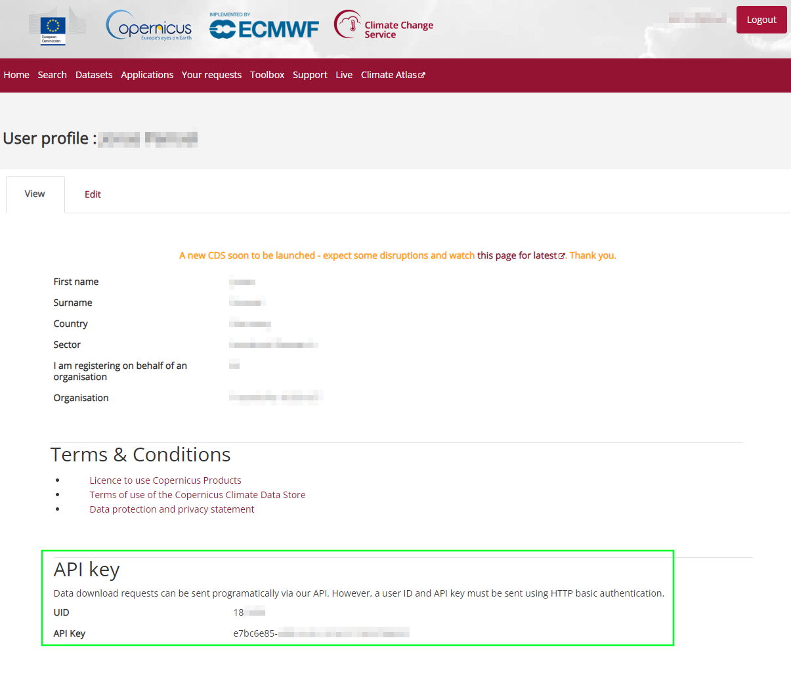

Installation
Get the repository files
Make sure that you have git installed and configured to clone remote repositories. Clone the Eclipse WattAdvisor repository:
git clone https://github.com/eclipse-wattadvisor/WattAdvisor.git
Note
Alternatively, you can also directly download the repository as a ZIP file from the GitHub page and extract its contents.
The created directory, whether you used git clone or downloaded and extracted the archived package, should at least contain these sub-directories and files:
├── WattAdvisor/
│ ├── wattadvisor/...
│ ├── environment.yaml
│ ├── README.md
│ ├── LICENSE.md
│ ├── requirements.txt
│ ├── pyproject.toml
Installation of the Python package
Warning
It is highly recommended to install WattAdvisor into a new, clean and empty Python environment. You can use venv or conda to create such an environment.
Change into the WattAdvisor directory (where pyproject.toml is located) and use pip to install the package into your Python environment:
pip install . -e -U
Install or add a solver to the project
An optimization problem solver is required to use WattAdvisor. The package installed via pip already contains the solver HiGHS. Furthermore, CBC and gurobi solvers are currently supported directly, but need to be installed separately.
Installation of CBC solver under Linux or Mac OS
If you are using Linux or Mac OS, you can use conda to install CBC solver to the WattAdvisor environment
(replace <name of your environment> by the actual name of the environment you want to install CBC to):
conda activate <name of your environment>
conda install conda-forge::coincbc
Installation of CBC solver under Windows
Under Windows, you have to download a pre-compiled executable of CBC solver and place it into the WattAdvisor project directory.
Download the latest Windows release as a ZIP archive (choose the file ending with “-w64-msvc17-md.zip”) from the CBC Github Repository.
Extract the “cbc.exe” file and place it into your working directory.
Add weather data
WattAdvisor depends on weather data to estimate the power generation profile from renewable energy plants or to generate synthetical heat demand profiles from annual sums of heat demands. Currently, it is possible to either
use data from Copernicus Climate Change Service that you have to manually download
or use custom weather data from other sources provided as CSV file(s)
At the beginning, the easier way is to acquire weather data from Copernicus Climate Change Service.
Download weather data from Copernicus Climate Change Service
To download weather data from Copernicus Climate Change Service, you have to create an account. After creation, visit your account page to collect your API key and UID which is needed to download weather data. You find the key and UID at the bottom of the page:
After that, copy the following code snippet to a new Python script:
import cdsapi
# paste your uid here:
uid =
# paste your API key here:
key =
c = cdsapi.Client(key=f"{uid}:{key}", url="https://cds.climate.copernicus.eu/api/v2")
c.retrieve(
'reanalysis-era5-single-levels',
{
'product_type': 'reanalysis',
'variable': [
'100m_u_component_of_wind', '100m_v_component_of_wind', '10m_u_component_of_wind',
'10m_v_component_of_wind', '2m_temperature', 'forecast_surface_roughness',
'soil_temperature_level_4', 'surface_pressure', 'surface_solar_radiation_downwards',
'total_sky_direct_solar_radiation_at_surface',
],
'year': '2022',
'month': [
'01', '02', '03',
'04', '05', '06',
'07', '08', '09',
'10', '11', '12',
],
'day': [
'01', '02', '03',
'04', '05', '06',
'07', '08', '09',
'10', '11', '12',
'13', '14', '15',
'16', '17', '18',
'19', '20', '21',
'22', '23', '24',
'25', '26', '27',
'28', '29', '30',
'31',
],
'time': [
'00:00', '01:00', '02:00',
'03:00', '04:00', '05:00',
'06:00', '07:00', '08:00',
'09:00', '10:00', '11:00',
'12:00', '13:00', '14:00',
'15:00', '16:00', '17:00',
'18:00', '19:00', '20:00',
'21:00', '22:00', '23:00',
],
'format': 'netcdf',
},
'weather.nc')
Paste your Climate Data Store UID and API key at the corresponding position and run the script from the WattAdvisor Python environment. If everything is configured correctly, you will get a similar output like:
2024-06-07 13:44:26,667 INFO Welcome to the CDS
2024-06-07 13:44:26,667 INFO Sending request to https://cds.climate.copernicus.eu/api/v2/resources/reanalysis-era5-single-levels
2024-06-07 13:44:26,776 INFO Request is queued
2024-06-07 13:44:27,865 INFO Request is running
2024-06-07 13:46:20,994 INFO Request is completed
2024-06-07 13:46:20,994 INFO Downloading https://download-0015-clone.copernicus-climate.eu/cache-compute-0015/cache/data5/adaptor.mars.internal-1717760725.....nc to weather.nc (1.4G)
After the download has completed, move the downloaded weather.nc-file to the your working directory.
Setting up a config file
WattAdvisor needs a config file that states which solver should be used, where the solver can be found or how logging should be performed. You can find an example config file in the example directory under WattAdvisor/examples/config.yaml
Set location of weather data
Edit the config file at the following position and replace <path to weather.nc file> by the actual path where you placed the weather.nc at the end of the previous step:
weather_data:
source: era5_netcdf
path:
netcdf: <path to weather.nc file>
Set CBC solver and its location
Under “use_solver”, write “cbc” to set CBC as the solver to use:
solver:
use_solver: cbc
If you are using Windows, make sure to also set the location of the previously downloaded cbc.exe. Edit the config file at the following position and replace <path to cbc.exe> by the actual path where you placed the cbc.exe file:
solver:
use_solver: cbc
executable_path: <path to cbc.exe>
Set location of parameters file
There is a file parameters.yaml in the examples directory, which contains common techno-economical parameters of all energy components currently modeled in the WattAdvisor optimization model. Make sure to either copy this file to your working directory and replace <path to parameters.yaml> by its actual path.
parameters_path: <path to parameters.yaml>